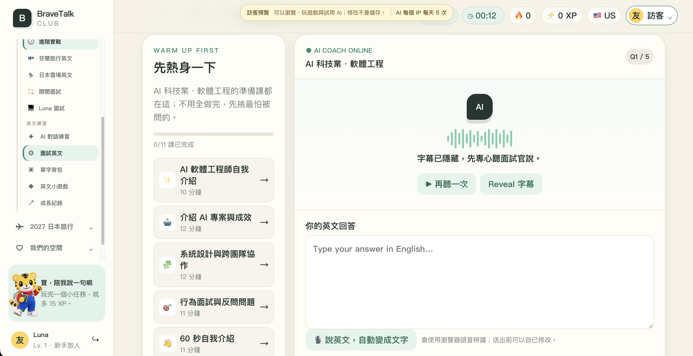
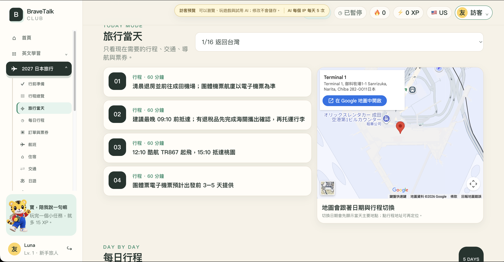

ENGLISH
AI 面試與口說練習

AI APPLICATION ENGINEER · FULL-STACK AI
具備 2–3 年 AI 與資料工程經驗，從系統架構、全端開發、模型整合到正式部署，持續把 PoC 推進成真正可用的產品。
03 / FEATURED SIDE PROJECT
為 TOEIC 600／CEFR A2–B1 學習者打造的 AI 英語口說與雙人旅行協作 PWA。從產品設計、程式開發、AI 整合到 Cloudflare 部署皆獨立完成。
ENGLISH

TRAVEL

LEARNING
TRAVEL
PWA → Cloudflare Workers → D1 / Static Assets → Workers AI
Gemma · Prompt Engineering · Context & Token Control · Fallback
01 / BACKGROUND
統計背景結合資料分析碩士訓練，從資料分析進入 AI 應用開發，現負責 AI 團隊技術規劃與產品交付。
EXPERIENCE
軟體服務公司｜技術規劃、系統架構、跨部門協作與全端 AI 產品交付
EDUCATION
Master · Data & Business Analytics · France
EXPERIENCE
生物科技公司｜Python、R、資料清理、統計分析與模型驗證
EDUCATION
Department of Statistics and Information Science · B.S.
02 / TECH STACK
Languages Python · TypeScript · JavaScript · SQL · R
Frontend React · PWA · Web Speech API · Service Worker
Backend FastAPI · Flask · Node.js · RESTful API · Background Workers
AI / LLM RAG · AI Agent · OCR · Prompt Engineering · Structured Output · Human-in-the-loop
Models Claude · Gemini · Gemma · Vertex AI · Workers AI · Ollama
Data PostgreSQL · MySQL · Supabase · D1 · pgvector · DuckDB · ETL
Cloud GCP · AWS · Cloudflare · Docker · Docker Compose · Caddy
Vision OpenCV · SIFT · FLANN · NumPy · Video Processing
04 / SELECTED WORK
DOCUMENT INTELLIGENCE
FULL-STACK & HYBRID AI
ENTERPRISE AI
COMPUTER VISION